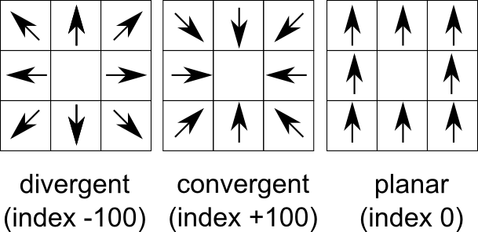

OPTIONS
- -s
- Increase convergence if slope value is high.
Slope parameter radically slows down computation time,
especially if the window parameter is high.
If slope is used, a slope modifier is used according to the formula:
sin(current)*sin(target) + cos(current)*cos(target).
If the slope of current and target cells are equal,
this modifier's value will be 1.
The modifier is applied with the formula:
acos(cos(convergence) * modifier)
- -c
- Use circular window instead of square (default)
- input
- Digital elevation model. Data can be of any type and any projection.
To calculate relief convergence, r.convergence uses real distances
which is recalculated into cell distance, according formula:
distance_between_current_cell_and_target_cell/distance_between_current_cell_and_nearest_neighbour_cell.
It is important if convergence is calculated for large areas in Lat/Lon
projection.
- weights
- Parameter describing the reduction of the impact of the cell
due to its distance, where distance in cells:
- standard: no decay
- inverse: distance modifier is calculated as 1/x
- power: distance modifier is calculated as 1/(x*x)
- power: distance modifier is calculated as 1/(x*x)
- gentle: distance modifier is calculated as 1/((1-x)/(1+x))
- window
- Window size. Must be odd. For now there are no limits in window size.
r.convergence uses the window size instead of classical radius for
compatibility with other GRASS GIS commands.
- output
- Map of convergence index.
The values ranges from -100 (max divergent, real peaks and ridges)
by 0 (planar areas) to 100 (max convergent, real pits and channels).
Classical convergence index presented with degrees (-90 to 90)
DESCRIPTION
How convergence index is calculated (3 x 3 window):

Figure 1: Convergence index for maximum divergence, maximum convergence, and planar
Convergence index is a terrain parameter which shows the structure of
the relief as a set of convergent areas (channels) and divergent areas
(ridges). It represents the agreement of aspect direction of
surrounding cells with the theoretical matrix direction. Convergence
index is mean (or weighted mean if weights are used) aspect difference
between real aspect and theoretical maximum divergent direction matrix
representing ideal peak (see figure) minus 90 degrees. So if there is
maximum agreement with divergent matrix the convergence index is (0 -
90) * 10/9 = -100. If there is ideal sink (maximum convergence) the
convergence index is (180 -90) * 10/9 = 100. Slope and aspect are
calculated internally with the same formula as in r.slope.aspect.
Convergence index is very useful for analysis of lineaments especially
represented by ridges or channel systems as well as valley recognition
tool.
SEE ALSO
r.slope.aspect,
r.param.scale,
r.neighbors,
REFERENCES
Claps, P., Fiorentino, M., Oliveto, G., (1994), Informational entropy of fractal river networks,
Journal of Hydrology, 187(1-2), 145-156 .
Bauer J., Rohdenburg H., Bork H.-R., (1985), Ein Digitales Reliefmodell als Vorraussetzung fuer ein deterministisches Modell der Wasser- und Stoff-Fluesse, IN: Bork, H.-R., Rohdenburg, H., Landschaftsgenese und Landschaftsoekologie, Parameteraufbereitung fuer deterministische Gebiets-Wassermodelle, Grundlagenarbeiten zu Analyse von Agrar-Oekosystemen, 1-15.
Böhner J., Blaschke T., Montanarella, L. (eds.) (2008). SAGA Seconds Out. Hamburger Beiträge zur Physischen Geographie und Landschaftsökologie, 19: 113 s.
AUTHOR
Jarek Jasiewicz
{kind=link}